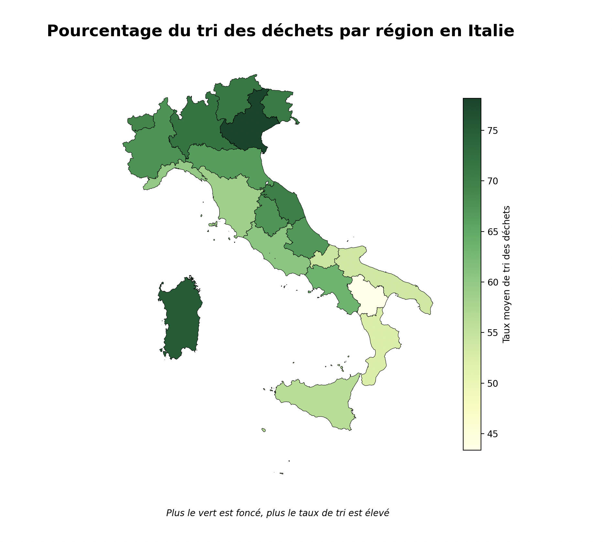

Visualisation des Résultats & Analyses
Matrice de Corrélation

Analyse des relations entre les variables du dataset (poids, densité, etc.).
Répartition par Régions
Cartographie du taux de tri moyen selon les zones géographiques étudiées.
Précision du Modèle

Évolution du score de prédiction en fonction de la taille de l'échantillon.
Déchets les plus triés

Identification des matériaux présentant les meilleurs taux de réussite au tri.